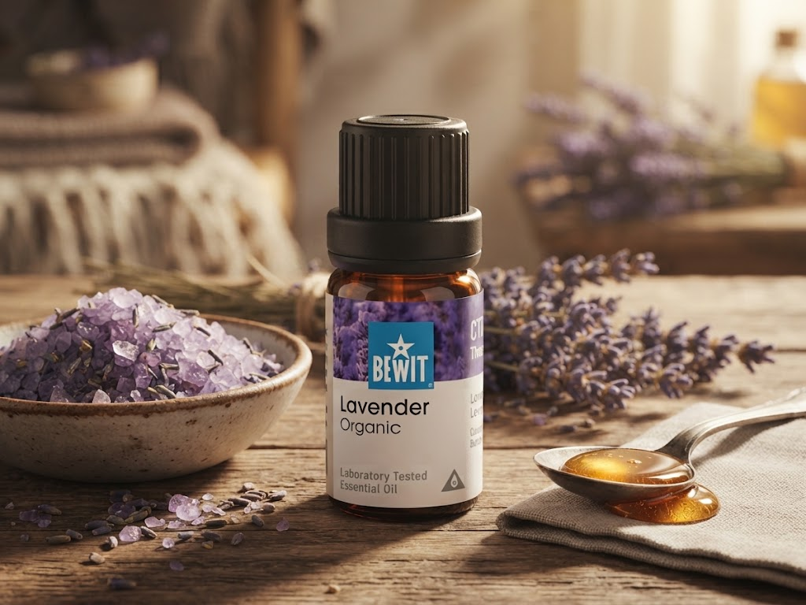

🌿 Lekce 16
dva recepty pro tělo i mysl
Ukážu vám, jak si připravit mléčnou koupel pro sametovou pleť a koupel na rozproudění lymfy.

Koupel je jedním z nejpříjemnějších způsobů, jak esenciální oleje použít — zpomalí vás, prohřeje tělo a nechá vůni působit na mysl i pokožku.
Šlehačková smetana (pro hedvábnou pleť) — nebo kravské či kozí mléko, případně rostlinné mléko (mandlové, kokosové, ovesné).
Esenciální oleje dle chuti — např. směs LOVE, SELF LOVE, INNER CHILD, MEDITATION nebo COMMUNICATION, případně jednodruhové oleje jako Levandule, Růže, Myrha, Cedr, Heřmánek, Kadidlo či Šalvěj.
1 PL rostlinného oleje (volitelné, pro extra zjemnění — např. kokosový, jojobový, mandlový, avokádový či mrkvový).
Koupelová sůl (Epsomská, Himalájská) nebo jedlá soda (volitelné, pro zdraví těla a pohybového aparátu).
Smíchejte smetanu nebo mléko dle výběru s esenciálními oleji dle chuti.
Pro extra zjemňující účinky přidejte rostlinný olej.
Podle chuti přidejte koupelovou sůl nebo jedlou sodu.
Vlijte do napuštěné vany a užijte si koupel.
Tahle koupel pomáhá rozproudit lymfu a zbavit tělo přebytečné vody (otoků).
Šlehačková smetana nebo mléko.
1–2 PL medu.
Hrst Epsomské soli (volitelné).
20–30 kapek směsi LYM.
Smetanu mírně zahřejte, aby se v ní rozpustil med.
Promíchejte a přidejte směs LYM.
Vlijte do lázně, případně přidejte hrst Epsomské soli.
Vydržte v lázni 20 minut.
Po koupeli se nesprchujte a jděte rovnou do postele — proces bude pokračovat i v noci a pravděpodobně se budete více potit.
Poslední krok: Tím naše lekce končí — kam se vydat dál.